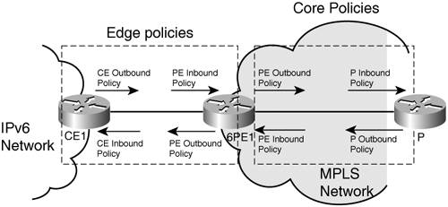

Deploying QoS for IPv6QoS is always enabled in an environment that already provides unicast connectivity. The tools and features used to enable this service depend on the characteristics of this infrastructure. IPv6 most likely is the newcomer in a preexistent IPv4 network. Chapter 3 discussed the IPv6 unicast deployment options and how the QoS design has to be tailored to them. This section looks at design recommendations for native and MPLS-based IPv6 deployments. Inevitably, the coexistence of the two protocols has to be addressed, too. QoS in a Native IPv6 DeploymentThe similarity between the implementations of QoS for the two versions of the IP protocol implies that the IPv4 QoS deployment rules are applicable to IPv6, too. You can find a detailed analysis of these design rules in the book End-to-End QoS Network Design: Quality of Service in LANs, WANs, and VPNs, by Tim Szigeti and Christina Hattingh. The basic steps to follow in planning for and designing a QoS deployment are as follows: The network layers usually support the end-to-end QoS in different ways:
Similar to IPv4, congestion control and management are implemented depending on the characteristics of the traffic identified through the various classes. Layer 2 QoS should be leveraged as much as possible throughout the network because switches often implement it in hardware. Usually a mapping of the top three DSCP bits or the TOS bits to COS is sufficient in terms of marking. However, the option is available to have independent marking policies. QoS in an MPLS-Based IPv6 DeploymentThe SLA and its associated network-deployed enforcing mechanism (QoS) are end-to-end concepts. Therefore, it is logical that it is implemented primarily by service providers, who are the ones with the end-to-end perspective. Because MPLS is one of the dominant technologies deployed in SP networks, it is also one of the primary areas for QoS implementation. Similar to native IP QoS, MPLS QoS technologies can be split into IntServ and DiffServ. The latter is the most widely deployed mechanism, but one starts to see some deployments with MPLS traffic-engineered tunnels, to provide guaranteed bandwidth across the MPLS core. MPLS-TE uses RSVP-TE to set up a labeled path across the MPLS domain. MPLS DiffServ and MPLS-TE can be combined together into an even more powerful tool for delivering QoS on packet networks. Most of the MPLS QoS deployments focus on the network edge, although some service providers are starting to deploy QoS in the MPLS core, too. Both 6PE (IPv6 MPLS over v4-signalled Label Switch Path, described in Chapter 3) and 6 VPE (BGP MPLS IPv6 VPN over v4-signalled LSP, described in Chapter 7) involve dual-stack edge routers communicating over a v4-based MPLS backbone. To enable QoS for 6PE and 6VPE, IPv6 traffic must be classified and conditioned (policed, shaped, and marked) pretty much the same way as IPv4, before entering the MPLS backbone. This typically must take place at the customer edge (CE) routers in the case of a managed service or at the provider edge (PE) router otherwise. This implies identifying IPv6 classes, then performing policing, shaping, and marking. In Figure 5-5, those tasks are referred to as edge policies. In practice, either the CE outbound policy or the PE inbound policy is set up: CE inbound policy is never used. In addition, in case QoS is also implemented in the MPLS core, a PE outbound policy is configured together with outbound policies at each hop (P-routers) in the MPLS provider core. This is the PHB, which, in this case, is essentially queuing and dropping. Figure 5-5. Deploying IPv6 QoS over MPLSMPLS is the foundation of a multiservice network, which is intended to transport a large variety of network layer protocols (IPv4 unicast and multicast, IPv6 unicast and multicast, IPv4 VPN, IPv6 VPN, as well as ATM, FR, PPP, Ethernet, and so on) and a variety of application data (Internet content, VoIP, video, and so on). When deploying QoS in the MPLS core, one does not expect to make it aware of the network layer protocol or of the application being carried. In other words, it is unlikely and even not recommended to differentiate IPv6 traffic from IPv4, but rather to treat equally IPv4 and IPv6 real-time traffic, and differentiate them from IPv4 and IPv6 data traffic, for instance. In that context, enforced by the 6PE (and 6VPE) approach where the same LSP used to transport IPv4 and VPNv4 traffic is also used to transport IPv6 traffic, the setting of core QoS for the latter is straightforward. It is just a matter of classifying the 6PE/IPv6 traffic into existing MPLS classes, and marking MPLS-encapsulated IPv6 traffic accordingly. Note There is no difference regarding DiffServ in an MPLS-based IPv6 deployment, whether the LSP was set up using IPv4 (6PE and 6VPE) or IPv6 or whether it was setup using LDP, RSVP, or even BGP. Instead of, or in addition to DiffServ, there may be some interest in deploying an IntServ strategy across the core (for instance, to reserve some paths for specific customers, or to optimize a better use of the network bandwidth). This can be done using MPLS-TE. MPLS, combined with RSVP, provides a mechanism to set up explicit paths across the core, and to associate them with bandwidth reservation or even DiffServ strategies. Despite the management complexity, some service providers with an MPLS infrastructure have meshed their core with TE tunnels and manually set up paths with reserved bandwidth. In that context, DiffServ can also be used to manage congestion conditions inside the TE tunnels themselves. When using MPLS-TE in networks where IPv4 and IPv6 traffic coexist, two approaches are possible: Either TE tunnels are shared for IPv4 and IPv6 traffic (recommended) or separate tunnels are signaled and used for the two protocol versions. TE tunnels can be combined with DiffServ, where the selection of tunnels is performed based on DSCP bits. This is referred to as CBTS. DiffServ-aware traffic engineering enables service providers to perform separate admission control and separate route computation for discrete subsets of traffic (for example, voice and data traffic, regardless of the network layer protocol). Note When IPv6-RSVP is available, it might still make sense to use a single MPLS-TE setup mechanism (IPv4 or IPv6) to set up a single tunnel used by both IPv4 and IPv6 for certain traffic classes. IPv4 and IPv6 CoexistenceOne question arises with the coexistence of IPv4 and IPv6: Should IPv6 traffic be differentiated from IPv4 traffic, or rather should traffic of a given class (for instance, real time) be differentiated from traffic of other classes (for instance, data) regardless of IP protocol type? Not only are both approaches possible, but different strategies can also apply to different parts of the network. The PHBs for the two protocols might be different under the following considerations:
In these cases, you should define different classes and policies for each traffic type. Note With transition mechanisms, the IPv6 traffic can leverage the deployed QoS of the traversed IPv4 infrastructure. In some circumstances, the IPv6 traffic might also lose its markings after crossing the IPv4 network. Differentiating based on applications rather than network layer protocol makes the most sense: After all, end users running a particular application (for instance, IP telephony) do not care about the network layer being used and expect the same level of network quality in all cases. This approach also reduces the management overhead for the QoS deployment and the use of network element resources. It is recommended that no differentiation should be made between the two protocol types in implementing QoS at layer 2. Similar to the recommendation made for MPLS, the infrastructure should be kept unaware of the transported protocol type. Moreover, different PHBs for IPv4 and IPv6 would lead to an unmanageable number of policies. The aim of IPv6 to reestablish a peer-to-peer model for IP transport will most definitely impact in a positive way the deployment of QoS. The boundary between private and public domains will no longer even out the characteristics of individual streams coming from different internal sources. In an IPv6 world, true end-to-end QoS policy implementations are closer to reality. Despite lacking a consolidated architecture at this time, the features available for IPv6 do provide the means to deploy QoS at least at the level of current IPv4 deployments. |